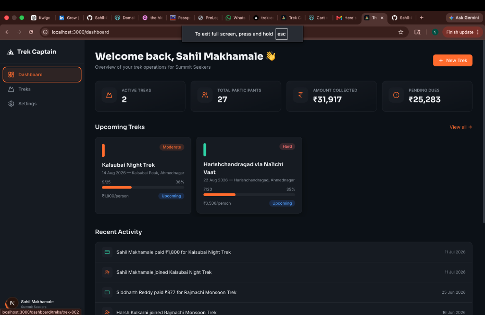

Kwigo — Travel Platform Redesign
Dated booking experience, weak brand positioning, and low enquiry conversion for Pune-based group trips.
Full redesign, stronger brand identity, and a streamlined booking flow built specifically for Indian travellers.
Substantial boost in direct WhatsApp enquiries within week 1 of going live.
Sakhi — AI Companion App
Mental-wellness support that works offline, privately, and in Hinglish without transmitting data to cloud servers.
React Native app running a local LLM on-device via Ollama; mood tracking, journaling, breathing exercises, and verified India crisis helplines.
Fully offline-capable, privacy-first companion app with zero latency and zero data exposure.

Trek Captain — Trek Management App
Manual participant tracking, chaotic payment collection (UPI/bank/cash), and tedious daily itinerary formatting for trek leaders.
Built a responsive Next.js SaaS dashboard with automated roster tracking, payment verification, and 1-click WhatsApp itinerary exports.
Reduced trip administration time by 70% with instant automated roster exports.
Traffic Volume Forecasting
Predicting peak hourly congestion patterns from raw historical traffic sensor data to optimize fleet dispatch and surge pricing.
Applied Pandas data cleaning, time-based feature engineering, and predictive modeling during the Uber x upGrad mentorship program.
Surfaced actionable peak traffic patterns supporting dynamic driver allocation strategy.
IMDB Movie Analysis & Strategy
Determining profitable release windows, director pairings, and genre investments for a studio planning global releases.
Designed a 6-table relational schema from raw IMDB data and executed complex SQL queries using CTEs, window functions (RANK, LEAD), and multi-joins.
Delivered concrete, data-backed strategic recommendations for film greenlighting and marketing windows.
Telecom Churn Analysis
High customer churn rates eroding recurring subscription revenue for a major telecom provider.
Performed comprehensive EDA on customer datasets to analyze contract lengths, payment methods, and demographic cohorts.
Segmented high-risk customer groups and flagged key pricing friction points to enable targeted retention campaigns.